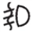
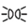
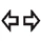
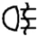

項目 | 設計 | 參考 |
近光指示燈 | 有關配置，請參閱設計. | |
有關功能，請參閱近光指示燈近光指示燈. | ||
前霧燈指示燈 |  | 有關配置，請參閱設計. |
有關功能，請參閱前霧燈指示燈前霧燈指示燈. | ||
遠光輔助指示燈 | 有關配置，請參閱設計. | |
有關功能，請參閱遠光輔助指示燈自動遠光指示燈. | ||
遠光指示燈 | 有關配置，請參閱設計. | |
有關功能，請參閱遠光指示燈遠光指示燈. | ||
駐車燈指示燈 |  | 有關配置，請參閱設計. |
有關功能，請參閱駐車燈指示燈位置燈指示燈. | ||
方向燈指示燈 |  | 有關配置，請參閱設計. |
有關功能，請參閱方向燈指示燈方向燈指示燈. | ||
自適應 LED 頭燈指示燈 | 有關配置，請參閱儀表系統。 | |
有關功能，請參閱自適應 LED 頭燈指示燈自適應 LED 頭燈指示燈. | ||
後霧燈指示燈 |  | 有關配置，請參閱儀表系統。 |
有關功能，請參閱後霧燈指示燈後霧燈指示燈. |
項目 | 設計 | 參考 |
前霧燈指示燈 | 有關配置，請參閱設計. | |
有關功能，請參閱前霧燈指示燈前霧燈指示燈. | ||
遠光輔助指示燈 | 有關配置，請參閱設計. | |
有關功能，請參閱遠光輔助指示燈自動遠光指示燈. | ||
遠光指示燈 | 有關配置，請參閱設計. | |
有關功能，請參閱遠光指示燈遠光指示燈. | ||
駐車燈指示燈 | 有關配置，請參閱設計. | |
有關功能，請參閱駐車燈指示燈位置燈指示燈. | ||
方向燈指示燈 | 有關配置，請參閱設計. | |
有關功能，請參閱方向燈指示燈方向燈指示燈. | ||
自適應 LED 頭燈指示燈 | 有關配置，請參閱儀表系統。 | |
有關功能，請參閱自適應 LED 頭燈指示燈自適應 LED 頭燈指示燈. | ||
後霧燈指示燈 | 有關配置，請參閱儀表系統。 | |
有關功能，請參閱後霧燈指示燈後霧燈指示燈. |